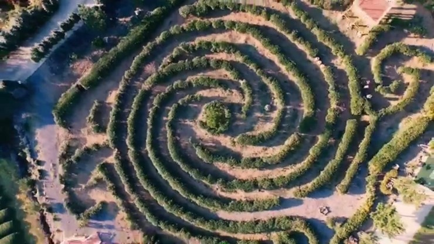
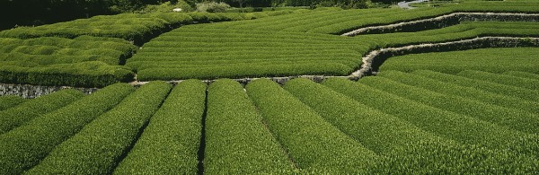
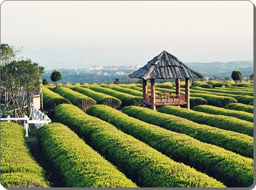

녹차미로공원
#제주도 #녹차미로공원 #미로공원 #녹차
insta
map
매일 09:00 - 19:00 | 하절기
매일 09:30 - 18:30 | 동절기
매일 09:30 - 18:30 | 동절기
064-738-4405
제주다원 녹차미로공원은 한라산 해발 500m 청정지역인 제2산록도로 1115번도로상에 위치하고 있으며,
1996년에 조성한 제주도 민간 제1호 5만여평의 녹차다원과 녹차나무로만 이루어진 총 5단계의녹차미로코스/
다양한 인생샷 포토존/ 동물먹이체험장/ 해먹체험장/ 파노라마뷰전망대/ 무료차시음장 등 다양한 볼거리와 즐길거리가 있어
매년 수많은 관광객들이단골이되어 찾는 제주도의 숨겨진 보물같은 곳입니다.
| 성인(Tea제공) | 9000원 | |
| 청소년(Tea제공) | 7000원 | |
| 어린이(Tea제공) | 6000원 | |
| 경로(Tea제공) | 6000원 | |
| 장애인(Tea제공) | 5000원 |
제주 서귀포시 산록남로 1246 녹차미로공원 [지번]색달동 산52 녹차미로공원